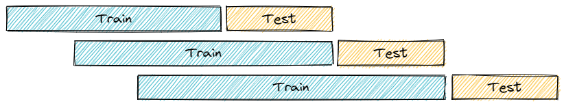
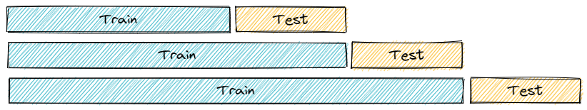
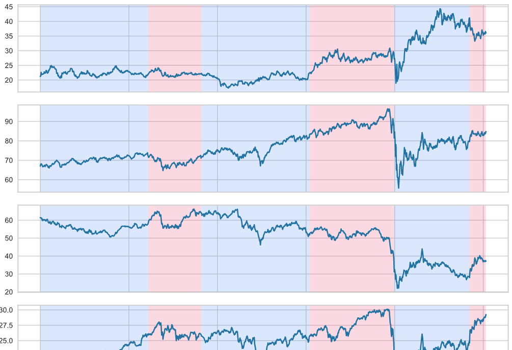
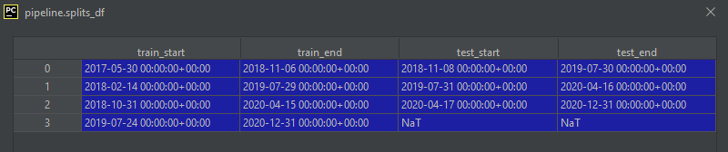

Splits
Split modules provide popular split strategies to partition data for model consumption.
Rolling Window

Often referred to as rolling window or walk forward optimization, this split strategy offsets each train/test split by the size of test set.
split=aim.Rolling(train_size=365, test_size=180, gap_size=1, expanding_window=False)
Expanding Window
Often referred to as rolling window or walk forward optimization, this split strategy offsets each train/test split by the size of test set while anchoring the train set.

split=aim.Rolling(train_size=365, test_size=180, gap_size=1, expanding_window=True)
Train Test Split
Simple train test split.
split=aim.TrainTest(test_size=.3)
Regime Detection
Regimes with general distribution changes are detected among the market of equities.

split=aim.Regimes(n_splits=5)
Inspecting Start and End Points
Each pipeline creates a pipeline.splits_df data frame to record the start and end dates for all train and test partitions. For example, the following are the start and end dates for a simple rolling split:

Examples:
See examples for more information